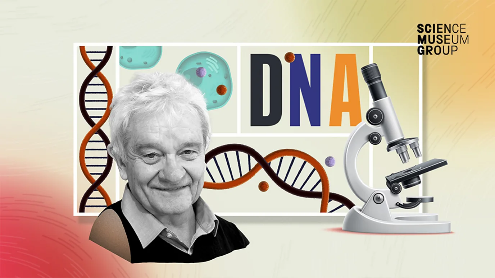
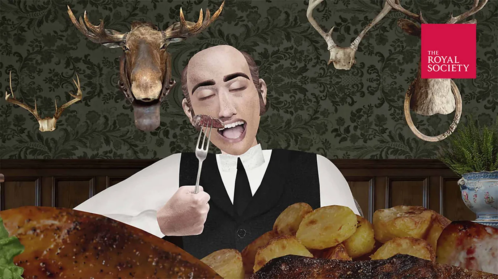
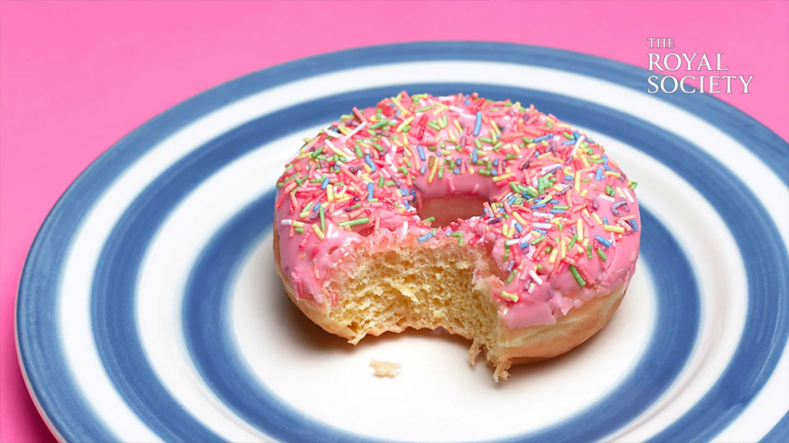
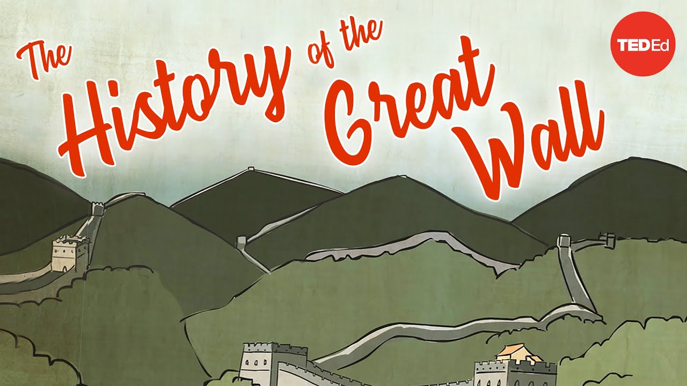

| 标题 | 日期 | 时长 | 资源链接 | 四级 | 六级 | 雅思 | 托福 | 考研 | 专八 | GRE | SAT | 其它 |
|---|---|---|---|---|---|---|---|---|---|---|---|---|
|
 |
2025-09-03 | 5:43 | 📄在线文稿 📁离线文稿 📚PDF | 33 | 19 | 3 | 11 | 39 | 1 | 15 | 26 | |
|
 |
2025-09-02 | 3:53 | 📄在线文稿 📁离线文稿 📚PDF | 34 | 28 | 1 | 20 | 40 | 8 | 13 | 18 | |
|
 |
2025-09-05 | 4:51 | 📄在线文稿 📁离线文稿 📚PDF | 18 | 14 | 3 | 11 | 26 | 6 | 9 | 10 | |
| 2025-09-04 | 5:28 | 📄在线文稿 📁离线文稿 📚PDF | 54 | 52 | 6 | 31 | 73 | 13 | 22 | 36 | ||

|
2025-09-01 | 5:49 | 📄在线文稿 📁离线文稿 📚PDF | 34 | 19 | 1 | 8 | 29 | 3 | 7 | 4 | |
| 2025-09-07 | 42:25 | 📄在线文稿 📁离线文稿 📚PDF | 124 | 95 | 17 | 54 | 149 | 13 | 48 | 72 | ||
|
 |
2025-09-03 | 4:29 | 📄在线文稿 📁离线文稿 📚PDF | 31 | 31 | 8 | 20 | 49 | 5 | 17 | 29 |